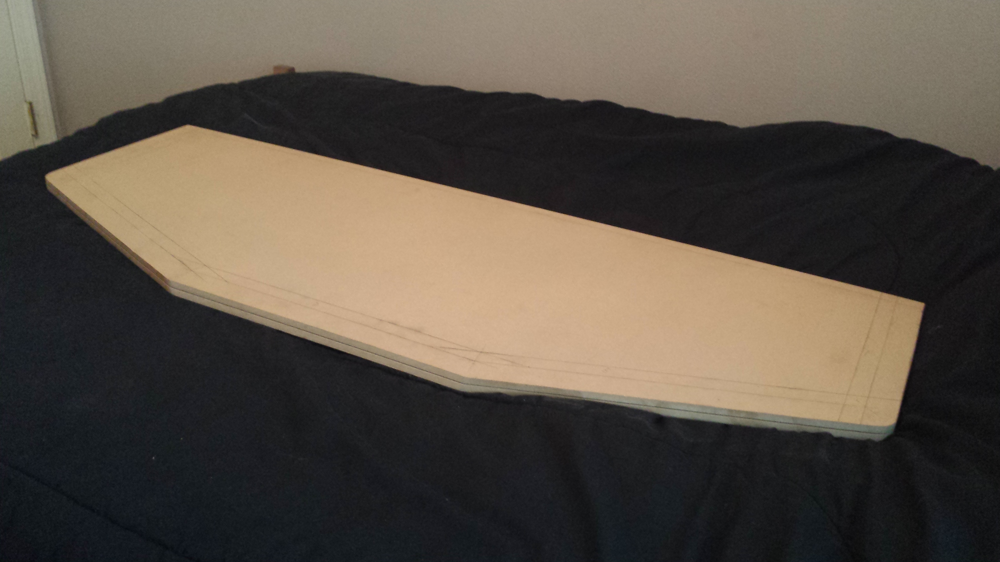

Computer Programmer
I've always been a big fan of classic arcade games. I've seen pictures online of other peoples' MAME machines, and I thought I'd get in on that action! I don't have room for an entire cabinet, but I'd love to play emulators using authentic arcade parts, with enough to play with friends. I've been planning a 4-player desktop arcade controller, and most of the parts delivered. I've been cutting and attaching scrap plywood and MDF in my free time, and I'm hoping to have it completed this summer!
Check this out!